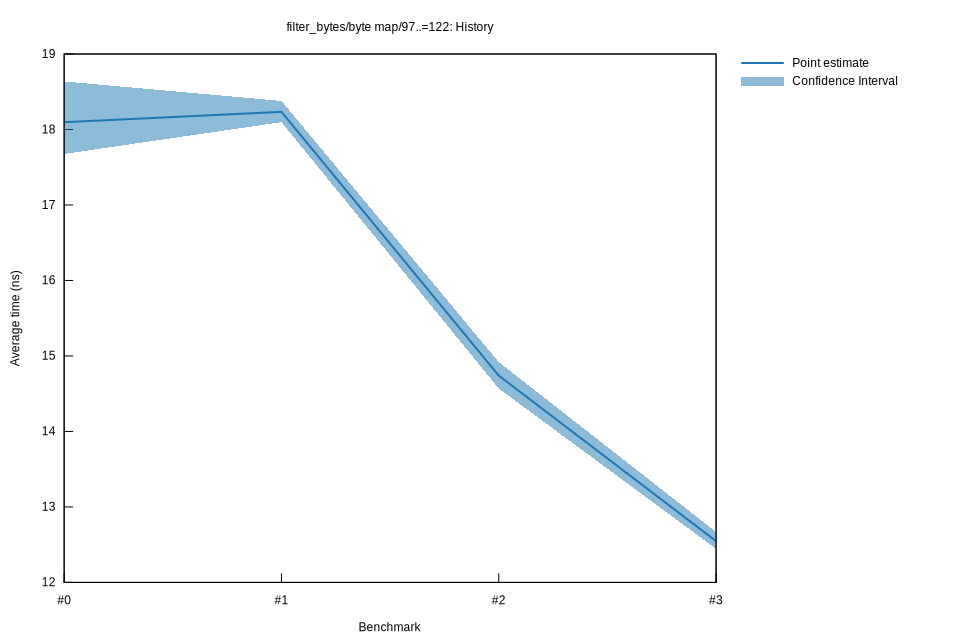

# 32025-11-08T06:57:09-08:00
|
Lower Bound |
Estimate |
Upper Bound |
| Value: |
12.44ns |
12.55ns |
12.67ns |
| Throughput: |
1.95GiB/s |
1.93GiB/s |
1.91GiB/s |
| Change in Value: |
-14.517% |
-12.988% |
-11.350% |
| Change in Throughput: |
+16.982% |
+14.927% |
+12.803% |
No change in performance detected.
# 22025-11-08T06:52:57-08:00
|
Lower Bound |
Estimate |
Upper Bound |
| Value: |
14.57ns |
14.74ns |
14.92ns |
| Throughput: |
1.66GiB/s |
1.64GiB/s |
1.62GiB/s |
| Change in Value: |
-22.005% |
-21.124% |
-20.080% |
| Change in Throughput: |
+28.214% |
+26.782% |
+25.125% |
No change in performance detected.
# 12025-10-14T15:34:24-07:00
|
Lower Bound |
Estimate |
Upper Bound |
| Value: |
18.10ns |
18.23ns |
18.38ns |
| Throughput: |
1.34GiB/s |
1.33GiB/s |
1.32GiB/s |
# 02025-10-09T13:31:17-07:00
|
Lower Bound |
Estimate |
Upper Bound |
| Value: |
17.68ns |
18.10ns |
18.64ns |
| Throughput: |
1.37GiB/s |
1.34GiB/s |
1.30GiB/s |